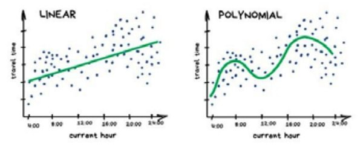
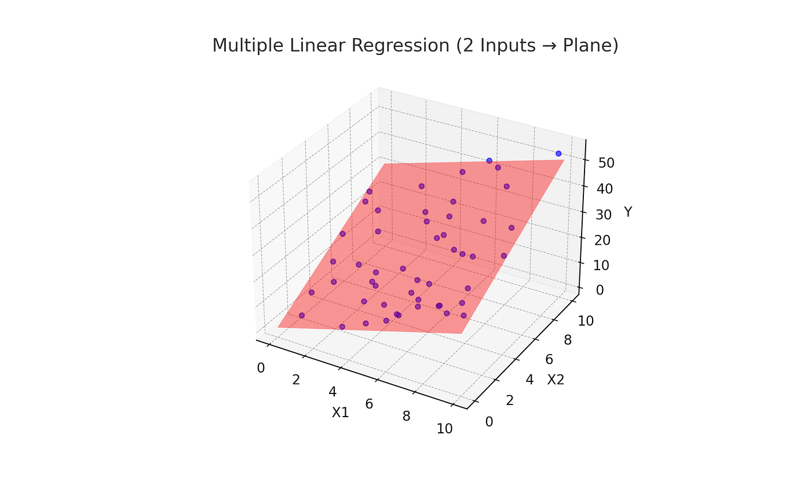
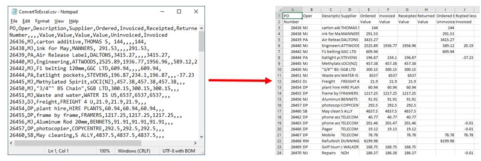

Homework 2: Regressione con Minimi Quadrati (algebra lineare)#
Esercizio 1) LS su dati sintetici#
Considera le 6 coppie di dati \((x_i, y_i)\) che rappresentano 6 città in termini di:
x : Indice della Qualità della Vita, con valori fra 0 e 100;
y : Costo Medio di un affitto mensile, con valori non negativi.
i |
x |
y |
|---|---|---|
1 |
60 |
921.82 |
2 |
65 |
947.36 |
3 |
70 |
999.86 |
4 |
75 |
1050.30 |
5 |
80 |
1121.71 |
6 |
85 |
1329.49 |
Calcola il modello di regressione (lineare semplice o polinomiale) che meglio descrive i dati forniti. In particolare:
visualizza i punti con lo scatterplot;
fissa il grado del modello lineare e costruisci la matrice di Vandermonde opportuna;
risolvi la regressione tramite i minimi quadrati implementati da
np.linalg.lstsq, provando modelli di grado 0, 1, 2 e 3;visualizza il polinomio di regressione ottenuto;
analizza e confronta i residui al variare del grado di approssimazione;
osserva la capacità di generalizzazione dei modelli ottenuti, sull’intero dominio \( x \in [0, 100]\);
guarda quanto cambiano i risultati (valori di beta ottimali e predizioni) risolvendo il problema dei minimi quadrati con Cholesky (funzione
np.linalg.cholesky)guarda quanto cambiano i risultati (valori di beta ottimali e predizioni) risolvendo il problema dei minimi quadrati con la SVD e la sua specifica riformulazione con la pseudoinversa di Moore–Penrose.
Esercizio 2) LS su dati reali#
Leggi i dati contenuti nel file Life_Expectancy_Data_Updated.csv e salvali in un dataframe.
Considera la colonna Life_expectancy e una seconda variabile numerica a scelta (possibilmente che correli con la prima).
Calcola un buon modello di regressione per predire Life_expectancy (feature dipendente, y) a partire da un’altra variabile del dataset (feature indipendente, x).
In particolare:
importa i dati dal file con la funzione di
pandas;guarda alle dimensioni del dataset e alle sue prime righe;
scarta le variabili non numeriche con
drop();utilizzando la funzione
scatter_matrixdipandas.plotting, guarda se e come correlano le variabili del dataset fra loro e individua di conseguenza una buona featurex:estrai dal dataframe i dati per la regressione (variabile indipendente
xe variabile dipendentey), poi visualizza i punti (x,y) con lo scatterplot.
Ora:
separa i punti per train e test;
fissa il grado del modello di regressione e costruisci la matrice di Vandermonde opportuna a partire dai punti di training;
risolvi la regressione tramite i minimi quadrati implementati da
np.linalg.lstsq, provando modelli di grado 1, 2 e 3;visualizza il modello di regressione sull’intero dominio \( x \in [0, 150]\), insieme ai punti di training;
calcola le predizioni per i punti di testing e visualizza il modello di regressione coi punti di testing;
analizza i residui e calcola le metriche di R-quadro e MSE.
Ripeti la regressione provando una altra feature x come variabile indipendente.
Esercizio 3) Regressione multipla#
A partire dal dataset contenuto nel file housing1.csv, analizza i dati del dataframe e crea il modello di regressione lineare multipla per predire il prezzo delle case (feature median_house_value).
In particolare:
importa i dati dal file con la funzione di
pandas;guarda alle dimensioni del dataset e alle sue prime righe;
utilizzando la funzione
scatter_matrixdipandas.plotting, guarda se e come correlano le variabili del dataset fra loro;dividi i dati per la regressione fra variavili indipendenti (variabile
X) e variabile dipendente (variabiley), poi separa i dati per train e test;sfruttando la funzione
LinearRegressiondisklearn.linear_model, calcola la regressione multipla sul train set e analizza i coefficienti calcolati: quali features fanno aumentare il prezzo medio delle case? Quali abbassano il costo e quali non incidono sul prezzo?fai testing, poi analizza i residui e calcola le metriche di R-quadro e MSE.
Ripeti la regressione multipla sul dataset dell’esercizio 2, per predire Life_expectancy.
Opzionale: ripeti la regressione multipla su un dataset a piacere.
RECAP#
Equazioni normali e minimi quadrati#
Consideriamo un sistema lineare \( Ax=b \) dove \(A\) non è necessariamente una matrice quadrata e dove i valori di \(b\) possono essere inesatti. In generale, non esiste un vettore \(x\) che soddisfi esattamente tutte le equazioni del sistema, ma possiamo trovare il vettore \(x\) per cui \(Ax\) è il più vicino possibile a \(b\).
Definendo il vettore dei residui \(r(x)=b-Ax\) come il vettore degli errori punto a punto, vogliamo allora che il residuo sia minore possibile e consideriamo il miglior \(x\) come il vettore che minimizza la somma dei quadrati degli errori:
Se \(x^*\) è la “miglior” soluzione del sistema, chiamiamo \(r^*=b-Ax^*\) il corrispondente residuo. Risulta (vedere la teoria) che \(r\) è un vettore ortogonale a tutte le colonne di \(A\), cioè:
Ricaviamo allora il sistema delle equazioni normali
Poiché \(A^TA\) è simmetrica definita positiva, il sistema può essere risolto in maniera effciente con la fattorizzazione di Cholesky. Inoltre, se \(A\) ha rango massimo per colonne, allora \(A^TA\) è anche invertibile (quindi le equazioni normali hanno un’unica soluzione).
Regressione con i Minimi Quadrati (LS - Least Squares)#
Abbiamo \(n\) osservazioni del tipo \((x_i, y_i)\) con \(i = 1, \dots n\) e ci serve trovare il modello \(f(x)\) tale per cui \(y=f(x)\). Ciò significa che \(f\) ci permette di predire \(y\) (variabile dipendente) a partire dalla conoscenza della \(x\) (variabile indipendente).
Siamo ora interessati a modelli lineari di approssimazione polinomiale, in cui cioè la funzione \(f(x)\) si assume essere un polinomio nella variabile \(x\) di grado \(d\), ovvero:
dove \(d\) (il grado del polinomio), viene scelto dall’utente.

Il nostro scopo è identificare i parametri \(\beta_k\) tali per cui \(f(x_i)\) approssimi \(y_i\) “al meglio”, ossia:
Note
Approssimare “al meglio” per noi significa minimizzare l’errore quadratico medio di predizione del modello \(f\), ossia:
Definiamo:
\(\beta = [\beta_0, \beta_1, \dots, y_d]\) il vettore dei coefficienti del polinomio \(f(x)\);
\(y = [y_1, \dots, y_n]\) il vettore che ha per elementi i dati noti;
\(A\) la matrice (spesso chiamata matrice di Vandermonde di grado \(d\)) che ha per righe le potenze di ciascun punto \(\{ x_1, x_2, \dots, x_n \}\), ossia:
Ora il problema di regressione è equivalente a:
che rappresenta numericamente un problema ai minimi quadrati, presentato sopra.
Regressione multipla#
La regressione lineare multipla estende quella semplice utilizzando più variabili esplicative per prevedere una variabile risposta:
Ogni coefficiente \(c_j\) descrive la variazione prevista di \(y\) quando \(x_j\) aumenta di un’unità, mantenendo costanti le altre variabili. I coefficienti si stimano con i minimi quadrati, costruendo una matrice con una colonna di 1 per l’intercetta e una colonna per ciascuna variabile esplicativa.

Pandas per lavorare sui dati reali#
Pandas è una libreria Python per caricare, organizzare e analizzare dati:
si installa con
conda install pandassi importa con
import pandas as pd.
Il DataFrame (df) è una tabella in cui le righe rappresentano le osservazioni e le colonne le variabili (aka proprietà, features). Colonne diverse possono contenere tipi di dati diversi (come numeri, testi o date).
Un file di testo in formato CSV (Comma-Separated Values) memorizza dati tabellari: ogni riga corrisponde a un’osservazione e i valori sono separati da un delimitatore, generalmente una virgola (a volte da un punto e virgola). La prima riga può contenere i nomi delle features.

Comandi principali di pandas per lavorare sui df:
df = pd.read_csv("dati.csv"): carica un file CSV.df.head(): mostra le prime righe.df.info(): riassume colonne, tipi e valori non nulli.df.describe(): mostra statistiche descrittive delle colonne numeriche.df["nome"]: seleziona una colonna.df[["nome1", "nome2"]].copy(): crea una copia indipendente delle colonne scelte.df[df["eta"] > 18].copy(): seleziona e copia le righe che soddisfano una condizione.df.isna().sum(): conta i valori mancanti per colonna.